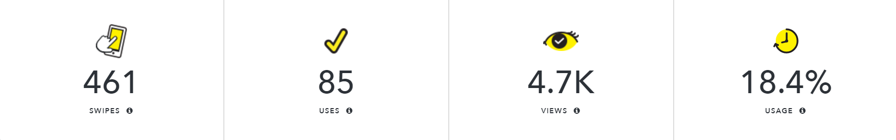

About This Project
This Snapchat filter is part of the social media campaign to promote Vocal Point All-Female A Cappella's concert "A (V)ery (P)otter Show".
Goals
- promote information of this upcoming event to students on campus
- engage protential audiences through the fun of social media activities
- reach out to more audience through the platform of Snapchat
Production
- Adobe Illustrator
- Adobe Photoshop
- Submited and placed order through Snapchat's Geofilter Create platform
- Same design also adjusted and submitted to Facebook Frame Studio
Performance
- users swiped through this filter 461 times
- the filter was sent to a friend or added to a story by users 85 times
- the filter received 4.7k views
See other materials that I designed for this campaign:
poster